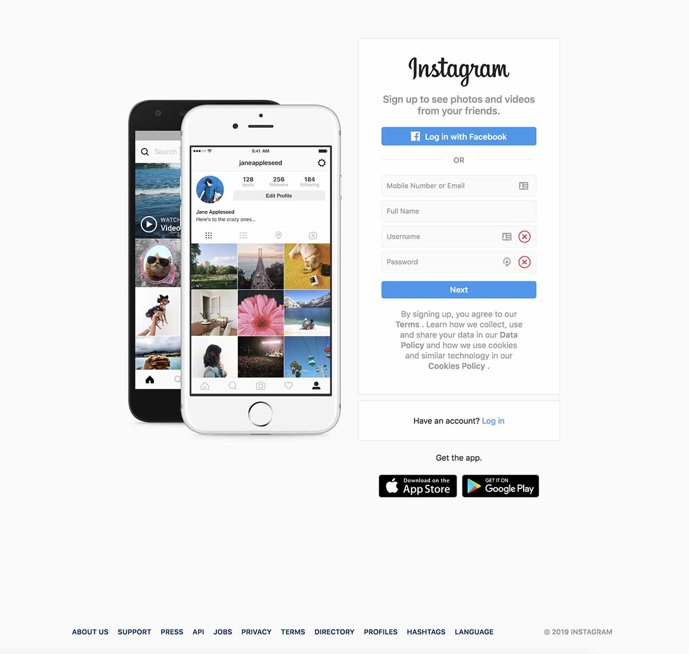

We all know that second to having a killer website, having a great social media presence is key for generating brand awareness and drumming up new business online.
But if you’re not someone who spends all their time glued to their phone, knowing where to start with your social media strategy might seem really difficult at first. Constantly shifting algorithms, new platform features and site updates mean that social media can feel like a world full of rules that you aren’t being kept abreast of.
Don’t get overwhelmed by all of this noise. Creating a social media strategy is surprisingly simple at its core. All you have to do is:
Choose which platforms you’re going to use
Decide on what content you’re going to create
Schedule your content ahead of time
Make attempts to engage with followers in real time
Analyse the results
Don’t worry, we’ll walk you through these steps in more detail below.
Choosing Your Social Media Platforms
One mistake that a lot of businesses make is trying to cover all of their bases by creating business accounts on every social media platform under the sun.
There’s really no need to do that. Being on fewer platforms give you more time to create better, tailored content to suit the platforms that your target audience uses the most.
In order for you to decide on which social media platforms are right for you, let’s dive into the top seven platforms you might want to make use of.
A Facebook Business page will give you access to analytics and advertising options that enable you to target specific demographics and locations with the click of a button.
Unfortunately, due to declining organic reach and revised algorithms, advertising has become somewhat of a must-have for Business pages in order for your content to reach substantial numbers of people.
But the good news is that you can start advertising with as little as £5 and Facebook’s targeting features, when used effectively, can help to make sure that small injection of cash goes a long way.
Have a browse through Facebook’s beginner’s guide to advertising if you want to learn a bit more about this feature.
According to CoSchedule, links receive the most engagement on Facebook, followed by photos. Your ideal character count for a Facebook post is around 111 characters, including one emoji. Keep your hashtags to a minimum though, as most people don’t tend to search hashtags all that much on Facebook.
The best time to post on Facebook is a topic of great debate, with a lot of conflicting information out there.
For example, Sprout Social claim that Saturday has the least amount of engagement, but both HubSpot and Buffer say that this is a good day to schedule posts on.
Sprout also say that evenings and early mornings have the least amount of engagement in the day but HubSpot recommend posting around 9am and TrackMaven specify that 8pm on Thursdays is the best time for engagement.
Most websites tend to agree that posts get the most engagement on weekdays at the end of the week (i.e. Wednesday, Thursday, Friday) and that Thursday is the best day of all for scheduling posts. They also mostly agree that lunchtime is a good time to post, although they vary in the specific cut off points. Between 12pm - 2pm is probably the sweet spot you should keep in mind.
Ultimately, however, it’s much more useful to delve into your own analytics to find out when your followers are the most active online.
YouTube
Although Facebook remains the most popular social network in the UK, it actually dropped from the second to the third most popular website recently after being surpassed by YouTube.
People often forget about YouTube when it comes to social media networks, regardless of its size. But it’s not only a massive community that you’re missing out on by not posting to this site, YouTube is also incredibly useful for building your SEO thanks to its search engine functionality.
Thanks to such high engagement rates, Instagram is a surprisingly business-friendly platform. 80% of accounts follow a business on Instagram and ad recall is 2.8x higher than industry norms, making it a valuable resource for raising brand awareness.

With fun features such as Instagram Stories, stickers, and filters, the platform offers a unique and exciting way of interacting with your followers. Check out our blog post on How Brands can use Instagram Stories for some more insight into these features.
Instagram is especially important to include in your social media strategy if you cater to millennials as 64% of its users are between 18 and 34.
When it comes to what to post, you can get away with more of everything on Instagram than you can on Facebook. Co-Schedule believe 241 characters is best, with roughly 11 hashtags and 3 emojis for maximum engagement.
Due to features such as Trending Topics and Moments, it’s a great resource for finding out what your consumers and people within your industry are talking about.
Conversations move much more quickly on Twitter than any other social media platform, making it ideal for customer service. In fact, 80% of advertisers’ inbound social customer service requests happen on Twitter.
This might seem like a really huge number at first but think about it - have you ever angrily tweeted to an airline about a delayed flight or a retailer about a missing delivery? Often, Twitter can be the quickest way to get an answer from businesses.
So it’s no wonder that 85% of SMB Twitter users say providing customer service there is important in order to quickly address grievances and turn frowns upside down.
According to Co-Schedule, photos are the best form of content to post on Twitter, followed by text and then links. The best character count is around 103, with two hashtags and one emoji.
LinkedIn
Unlike some of the other social media networks we’ve just looked at, LinkedIn is a slightly more niche platform.
Although it might not necessarily be imperative for small businesses to be focusing their efforts here, it is an extremely important network for B2Bs. 30 million companies have LinkedIn profiles, making it an invaluable resource for engaging with other businesses.
As LinkedIn is slowly becoming more and more of a recruitment website, it’s also becoming a great place to show off your company in order to attract the best talent.
It’s fantastic for networking with valuable contacts in LinkedIn groups and building thought leadership by writing articles on their website.
You can also use it to look up individuals and companies you’re meeting with in order to find out more about new business prospects.
Co-Schedule believe that links work best on LinkedIn, followed by text and then photos. The best character count is 149, with no hashtags or emojis.
Pinterest
Again, Pinterest might not be imperative for small businesses but it can be a great way to help build your SEO. Whereas content on other forms of social media tend to only have a lifespan of a few hours or even just minutes, Pins have an average lifespan of 3 months.
Unsure of how you can fit Pinterest into your social media strategy? Well, on Pinterest you can create a variety of different boards with links to your products and services, or a board with your blog posts, or a board demonstrating your company’s thought leadership and awareness.
These targeted snippets of linked content can act essentially as a portfolio, all while helping you to garner referral traffic to your website.
Like Instagram, Pinterest is predominantly an image-based social media platform so images will perform the best here, but links are also good too (just make sure your meta-descriptions are up to snuff). Co-Schedule believes that if you’re using text 215 is the ideal character count, although you shouldn’t include any hashtags or emojis.
Snapchat
Snapchat also might not necessarily be an imperative platform for you to be using but if your audience includes teenagers then it’s definitely worthwhile. According to Business Insider, Snapchat is the second most important platform among teenagers, with Instagram taking first place.
Around 55% of Snapchat users have reported that they follow one or more brands on the platform, making it a great place to pick up followers. Plus, in terms of advertising, Snapchat has amazing retention rates, with over 50% of Snapchat users willing to open a brand’s Story and of those, 86% will watch the entire Story.
Businesses on Snapchat can advertise with Stories that are more dynamic and longer than personal snaps. One of the most popular ways that businesses can use Snapchat is to create a sponsored lens. It’s estimated that sponsored filters are seen by 16 million users each day.
Nailing Your Content
Okay so you’ve got your chosen social media platforms all figured out. Now it’s time to start writing content for these sites. You know roughly what kind of content works best on which platform, how many hashtags and emojis to use, and how long your character count should be. But what about the actual content?
When it comes down to it, working out what content to post largely depends on what industry your business is concerned with.
Do you work in a professional, straight-laced kind of industry? Try focusing on educational facts, figures and statistics that show potential customers that you know what you’re talking about.
Is your industry more laid-back and friendly? Memes, gifs and emojis might be the best way to snag yourself some more followers by showing off a bit of personality.
If you’re stuck for ideas, a good place to start is with social media holidays. There’s a wide range of hashtag holidays that you can use to anticipate trending topics and encourage engagement online.
From light-hearted holidays such as Star Wars Day to more serious days of recognition such as World Humanitarian Day, you’re sure to be able to find conversation-starters that fit with your company’s purpose.
One issue you can run into when searching for these holidays online is the fact that many sites that compile them are American, therefore making certain ‘national’ holidays either irrelevant or on a different date for UK-based businesses.
No worries, though. We’ve gone ahead and double checked that all of the following holidays for 2019 are happening in the UK on these dates. Plus we’ve even put together a handy Google Sheets calendar together with all of these dates included so you can start planning your content straight away. You’re welcome.
By actively keeping an eye out for the content your followers post, you’re showing them that you care about what they have to say.
16th - International Day of Living Together in Peace
17th - International Day Against Homophobia and Transphobia
17th - Endangered Species Day
18th - Eurovision Finals
18th - FA Cup Finals
18th - International Museum Day
20th - World Bee Day
21st - RHS Chelsea Flower Show begins
21st - National Memo Day
22nd - International Day for Biological Diversity
25th - Scottish Cup Final
25th - National Wine Day
27th - Spring Bank Holiday
27th - Memorial Day (US Holiday)
28th - World Hunger Day
30th - Cricket World Cup begins
June
1st - Pride Month begins
1st - International Children’s Day
1st - Global Day of Parents
2nd - National Cancer Survivors Day
3rd - World Bicycle Day
3rd - Leave The Office Early Day
4th - Eid al-Fitr
5th - World Environment Day
6th - Tour de France begins
6th - Higher Education Day
8th - World Oceans Day
8th - Bike Week begins
11th - National Making Life Beautiful Day
12th - National Loving Day
14th - World Blood Donor Day
16th - Father’s Day
17th - National Eat Your Vegetables Day
18th - National Go Fishing Day
20th - World Productivity Day
20th - World Refugee Day
21st - Summer Solstice
21st - World Music Day
21st - National Selfie Day
21st - National Take Your Dog to Work Day
22nd - Positive Media Day
23rd - National Pink Day
26th - Glastonbury Festival
27th - National Sunglasses Day
27th - National Handshake Day
29th - National Camera Day
30th - Social Media Day
July
1st - Wimbledon Tennis Championships begin
1st - Canada Day (Canadian Holiday)
2nd - World UFO Day
4th - Independence Day (US Holiday)
5th - National Bikini Day
6th - Take Your Webmaster to Lunch Day
6th- Virtually Hug a Virtual Assistant Day
7th - World Chocolate Day
9th - Cow Appreciation Day
10th - Piña Colada Day
11th - World Population Day
12th - British Grand Prix
12th - National Simplicity Day
13th - Rock Worldwide Day
14th - Bastille Day (French Holiday)
15th - Give Something Away Day
16th - World Snake Day
17th - World Emoji Day
18th - British Open begins
18th - Nelson Mandela International Day
20th - National Moon Day
21st - Ice Cream Day
24th - Tell An Old Joke Day
25th - Wine and Cheese Day
26th - Talk In An Elevator
29th - International Tiger Day
30th - International Friendship Day
August
1st - World Wide Web Day
1st - Planner Day
1st - Respect for Parents Day
2nd - Edinburgh International Festival begins
2nd - International Beer Day
4th - White Wine Day
5th - Summer Bank Holiday (Scotland only)
5th - National Underwear Day
8th - International Cat Day
9th - National Book Lovers Day
10th - National Lazy Day
11th - Eid al-Adha begins
12th - International Youth Day
12th - World Elephant Day
13th - International Lefthanders Day
15th - Best Friends Day
15th - National Relaxation Day
16th - National Tell a Joke Day
18th - Bad Poetry Day
19th - World Photo Day
19th - World Humanitarian Day
20th - World Mosquito
22nd - Be An Angel Day
24th - International Strange Music Day
25th - Notting Hill Carnival begins
26th - Summer Bank Holiday (except in Scotland)
26th - National Dog Day
26th - National Women’s Equality Day
27th - Just Because Day
31st - International Bacon Day
September
2nd - Labor Day (US and Canadian Holiday)
4th - National Wildlife Day
5th - International Day of Charity
6th - Read a Book Day
7th - National Beer Lover’s Day
8th - International Literacy Day
10th - National Swap Ideas Day
11th - National Day of Service and Remembrance (US Holiday)
12th - National Day of Encouragement
12th - National Video Games Day
13th - International Programmers Day
13th - Stand Up to Cancer Day
14th - London Fashion Week begins
15th - International Day of Democracy
15th - Google Day
17th - National IT Professionals Day
20th - Rugby World Cup begins
21st - Oktoberfest begins
21st - International Day of Peace
21st - Civic Day of Hacking
22nd - Hobbit Day
22nd - Car-Free Day
23rd - First Day of Autumn
23rd - International Week of Happiness begins
24th - National Punctuation Day
26th - European Day of Languages
27th - World Tourism Day
28th - National Good Neighbour Day
29th - Rosh Hashanah
29th - World Heart Day
30th - International Podcast Day
October
1st - Black History Month begins
1st - International Coffee Day
1st - World Vegetarian Day
4th - World Animal Day
4th - National Taco Day
4th - World Smile Day
5th - World Teachers’ Day
6th - National Grandparents Day
7th - World Habitat Day
10th - World Mental Health Day
10th - World Sight Day
13th - National Train Your Brain Day
14th - National Dessert Day
16th - World Food Day
16th - Bosses Day
17th - International Day for the Eradication of Poverty
18th - Get to Know Your Customers Day
20th - World Statistics Day
21st - Reptile Awareness Day
24th - United Nations Day
27th - Diwali
30th - Checklist Day
31st - Halloween
November
1st - National Authors Day
1st - World Vegan Day
3rd - National Sandwich Day
5th - Bonfire Night
8th - STEM Day
8th - National Cappuccino Day
11th - Veterans Day (US Holiday)
13th - World Kindness Day
14th - World Diabetes Day
16th - International Day for Tolerance
17th - International Students Day
19th - National Entrepreneurs Day
20th - Universal Children’s Day
21st - World Hello Day
26th - National Cake Day
28th - Thanksgiving (US Holiday)
29th - Black Friday
30th - St Andrew’s Day
30th - Small Business Saturday
30th - Computer Security Day
December
1st - World AIDS Day
2nd - Cyber Monday
3rd - International Day of Persons with Disabilities
4th - National Cookie Day
5th - World Soil Day
10th - Human Rights Day
10th - Nobel Prize Day
11th - International Mountain Day
13th - National Salesperson Day
21st - Crossword Puzzle Day
22nd - Hanukkah begins
22nd - Winter Solstice
24th - Christmas Eve
25th - Christmas Day (Bank Holiday)
26th - Boxing Day (Bank Holiday)
30th - No Interruptions Day
31st - New Year’s Eve
Scheduling Software
Now that you’ve got your content all planned out in your content calendar and it’s been signed off from your boss as being good to go it’s time to start scheduling. Using automated software to post your content at predetermined times is important to do in order to free up time for you to get on with other work.
But what social media management software should you use to do so?
Facebook
Facebook has a post scheduler already built into their website so it’s super easy to get your posts all squared away.
To schedule a post, all you have to do is:
Click Publishing Tools at the top of your page
Click Scheduled Posts in the left column
Click the blue +Create button.
Compose your post with text, images, videos etc.
Click the drop down button that says Share Now and select Schedule
Below Publication, select the date and time you want to publish the post
Click Schedule
To manage your scheduled posts (i.e. to reschedule, edit or delete scheduled posts):
Click Publishing Tools at the top of your page
Click Scheduled Posts in the left column
Click the post you want to edit
Click Edit to edit the post or click the blue arrow button to choose to publish, reschedule or delete it
YouTube
YouTube also have a post scheduler built into their website already that you can use to schedule videos as you load them.
To schedule a video:
Click the camera icon in the top right corner to Create a video or post.
Click Upload video from the drop down list.
On the upload page, select the privacy drop-down menu, and select Scheduled or Private.
Upload the video using YouTube’s upload instructions. Your video will begin processing.
In the Basic info window, set the date, time and time zone in which you want your video to be published. You can also add a message to subscribers here.
At the top of the screen, click the Publish button to confirm scheduled publication. The video stay private until the scheduled time.
If you change your mind and would like to edit the scheduled publish time or publish the video straight away:
Sign in to YouTube Studio beta.
From the left-hand menu, select Videos.
Hover over the video that you’d like to edit.
Select the drop down arrow in the ‘Visibility’ column.
To adjust the scheduled publish time, ensure that the visibility is Private, choose the new time and Save.
To publish the video immediately, set the visibility to Public and Save.
Tweetdeck
Twitter also have their own scheduler but it’s not hosted on their main website. It’s called Tweetdeck and can be used not only for scheduling your posts, but also for real-time tracking, organising and engagement.
Simply log in to Tweetdeck with your Twitter login details to get started. Then:
Confirm that the Twitter account you’d like to Tweet from is selected.
Compose your Tweet. Include and image or video with the Tweet by clicking Add images or video.
Click Schedule Tweet and select the date and time you’d like the Tweet posted.
Click Schedule Tweet at [date/time].
You can view and edit your scheduled Tweets by adding a Scheduled column. To add a column:
From the navigation bar, click on the plus icon + to select Add column.
Selected the type of column you’d like to add.
Under Your accounts, select the account you wish to populate the column.
Hootsuite
Unfortunately Instagram, LinkedIn and Pinterest don’t currently offer the ability to schedule posts ahead of time so instead, you will have to look into other forms of social media management software.
There are a whole bunch of social media management companies out there and all of them offer roughly the same sort of package but Hootsuite is the only one that offers an actually free service (as opposed to just a free trial period).
They do try to hide it on their website though so make sure you follow this link in order to get to the right page.
The free version of this software lets you:
Manage up to three social media profiles from a choice of channels including Facebook, Twitter, Instagram, Pinterest and LinkedIn
Schedule up to 30 posts in advance at any point in time
Track follower growth, likes and comments
Integrate two RSS feeds in order to find and share compelling content
Access Hootsuite’s online help center and community forum
Of course, there’s also a number of paid-for packages that you can buy from Hootsuite that give you access to services including higher ad spend budgets, automated post scheduling and custom analytics.
But if you’re a small business looking to get started, the free version of the software should be comprehensive enough to allow you to get your social media strategy in motion.
Simply put, to schedule posts on Hootsuite all you have to do is:
Click New Post in the top right hand corner.
Choose which social network you’d like to post to.
Compose your post by adding text or media. The layout of this post will be viewable in the preview window.
Click Schedule for later.
Select a date and time for the post to publish (12:00am is midnight, and 12:00pm is noon), and then click Done.
Click Schedule.
HubSpot
If you’re already paying for HubSpot’s ‘Marketing Hub Professional’ package, you’ll be pleased to know that they also offer a scheduling feature for social media that enables you to schedule posts ahead of time, monitor engagement and create reports that go back as far as the last 3 months.
To schedule your posts:
Navigate to Marketing > Social in your HubSpot account.
In the upper right, click Create social post.
In the right panel, select the first social network to publish your post to. You can publish posts to Facebook, Instagram, Twitter or LinkedIn. If you haven’t connected your social accounts to HubSpot, set them up first before continuing.
In the text box, enter the content for your social post.
Use the @ symbol to mention or tag other accounts. Instagram mentions will not be auto-completed, but Instagram will acknowledge the mention when the post is live.
Add emojis, links, images and videos to your post using the relevant icons.
The composer will automatically select a publish date based on your social publishing schedule but you can change the date by clicking then When dropdown menu. You can select a specific date and time, or click Publish now to publish the post immediately.
Lastly, select a HubSpot campaign to associate the social post with. In the bottom right, click the Campaign dropdown menu and select a campaign or click Create a new campaign.
In the bottom left, click Schedule post or Publish post now to schedule it for publishing or publish it immediately, depending on the publish date and time you selected.
For a more detailed explanation, check out HubSpot’s guide here.
What’s the Importance of Social Monitoring, Social Listening and Engagement?
Simply writing social media content and scheduling it to be posted is not enough to create a strong social media presence and gain followers, no matter how good your content is.
Planning your content ahead of time helps you to be proactive, but social media requires you to also be reactive at all times as well.
72% of people ages 18-34 and 47% of those over 45 say they would be more likely to be loyal to a brand that replies to them, compared to those companies that stay comparatively silent. Making sure that you’re able to respond to conversations your customers are having about you is therefore really important for building brand loyalty.
Social monitoring, social listening and engagement are three important factors that can help you to assess your social media strategy in real time, allowing you to find out trending topics, see what people are saying about your brand and start conversations with potential customers.
Let’s break down these three terms:
Social Monitoring
Social monitoring is the method of looking for mentions of your brand, products, hashtags, employees, competitors and customers.
Social Listening
Social Listening is how you track, analyse and respond to conversations across the Internet. It’s a two part process - the first half involving social monitoring and the second half involving analysis and the creation of actionable responses.
Engagement
Engagement is the process of having conversations with individuals about your industry, brand, products and services.
If social monitoring is the first half of social listening, then engagement is usually the second half.
However, engagement doesn’t always have to be in response to something someone has said about your brand. Engagement can start with your business reaching out to customers to start conversations too.
How To Monitor Mentions of Your Business
There are a number of ways you can monitor mentions of your business online.
Obviously you can manually trawl through social media platforms, searching for mentions of hashtags, products, competitors etc. but that’s a very time consuming process.
It’s much quicker to make use of these easy-to-use tools instead:
Google Alerts allow you to track a word or a phrase associated with your business across Google’s search engine results.
Simply sign in with your Gmail account or fill out the Google Alert form, type in the search terms you wish to track and Google will alert you by email whenever it finds new mentions of that word or phrase on the web.
You can set how often you’d like to receive these Alerts so they don’t clog up your inbox and you can filter by news, video, blogs, books etc so you only get the most relevant content.
If you’ve already started using this free service from Twitter to schedule your tweets, then it’s also worthwhile digging into its social listening functions.
Tweetdeck lets you monitor different users, hashtags, search terms and lists. Perfect for keeping an eye on social media during events such as industry conferences.
This aggregator enables you to monitor your search term across a variety of search engines and over 100 different social networks.
Currently, you can either visit their website as and when you deem necessary or set up daily social media alerts.
Social Mention is unique in the way in which it categories each mention of your search term in terms of Strength, Sentiment, Passion and Reach, allowing you to get a better picture of what is being said about your company at a glance.
How To Engage With Your Followers
The term engagement is thrown about a lot by social media marketers but sometimes it can be hard to know what this really means.
Here are a few strategies that marketers actually use to generate engagement:
Host an AMA
For those who aren’t super clued up on social media, AMA stands for ‘Ask Me Anything’. AMAs are essentially online Q&A sessions that can be centered around a specific topic or they can just be a general opportunity for you to interact with your followers.
To conduct an effective AMA, you need to pick the right person at your company to engage with followers, time your AMA to happen when your followers are their most active and make sure to promote it ahead of time.
Here are just some of the ways you can conduct an AMA on social media:
Via Facebook Live - answer questions in real time through a videoed response. You can even record the session for your followers to view at a later time. Both YouTube and Instagram also have Live video options as well.
Use Instagram question stickers in your Stories - prompt your followers to ask you questions by creating a Story with a question sticker.
Create a custom hashtag on Twitter - ask your followers to use a specific hashtag in order for you to find their questions on Twitter and respond to these tweets by quote-tweeting them.
Try using polls or quizzes
If you’re looking to get feedback on a specific question, or simply want to inject a bit of fun into your feed, why not try introducing a poll or a quiz on Facebook, Instagram or Twitter?
Polls and quizzes are a great method for generating engagement because they’re the type of content that can provoke strong feelings from your followers.
Say you ask your customers a question about which football team they support. We all know how rabid football fans can be - they won’t be able to help themselves from contributing!
Plus, polls and quizzes help to add a bit of variety to your feed; some of them can even be visually striking!
Facebook now allows you to add photos to your polls and on Instagram you can create a poll or a quiz using stickers in your Stories. For a step-by-step guide on how to use Instagram's quiz sticker, check out this article by Instasize.
Make use of User Generated Content
Using User Generated Content (UGC) is a fantastic way of demonstrating the two-way nature of social media to your followers.
By actively keeping an eye out for the content your followers post, you’re showing them that you care about what they have to say. Reposting comments, images or even memes your followers have made will make you stand out as an attentive business that is dedicated to building a real conversation online.
UGC can even be a brilliant way of populating your social media accounts with gorgeous images while creating contacts and saving you both time and resources all at once.
Reply to DMs and Comments
This might seem super obvious but so many businesses ignore or forget to respond to DMs and comments on their feed.
In order to build loyal customers that are likely to recommend your business to their friends, you need to ensure that you always present a friendly and helpful face. Imagine you treated a customer in real life in that way - you’d probably never see them again!
Community building should be at the heart of your social media strategy and you can’t begin to do this without responding to your DMs and comments. Show your followers that you value what they have to say by responding.
Use Automation to Assist You
For small businesses who might not have a social media manager at their company, automation can be somewhat of a lifesaver when it comes to saving time and energy.
Tools such as Zapier and IFTTT can automate the process of triggering activity in one app based off of activity that occurred in another app (such as sending a notification of Twitter mentions to your Slack). Plus, you can add a variety of filters to ensure that you are only sending the most relevant content to the right person.
You do have to be a bit careful with automation though. Most social media channels have strict rules around spam and you don’t want to be seen as a bot that churns out automated responses instead of a business that is actually invested in its customers’ questions.
If you’re interested in finding out more about social media automation, Zapier have a great article on the ways you can use their software for sales and marketing.
Schedule Time to Engage
Most importantly, you need to make sure that you factor time into your day to engage with your followers.
Because social media works in real time, many people think it’s something they can just squeeze in whenever they have some downtime, but really you’re just short-changing yourself. We get that spending time scrolling on your phone feels a bit like cheating during the work day but we promise you it’s not!
By scheduling in 30 or even just 15 minute blocks into your day to check social media, see what the community is talking about and see what you can add to the conversation, you’ll make huge strides towards an effective engagement strategy.
What’s the Difference Between Reach and Impressions?
You might have also seen these two terms floating around when digging into your social media strategy. These two metrics are both helpful to keep track of when analysing the results of social media campaigns and setting goals for the future.
But they can be a bit difficult to understand in relation to one another when you’re first getting to grips with your social media strategy.
Reach is the number of unique accounts that have been exposed to a piece of content you’ve posted on social media.
Impressions are the number of times that post was delivered to users’ feeds - regardless of whether those users engaged with it or whether they’d seen it before.
This might seem a bit confusing at first. Those two definitions sounds pretty similar at a first glance.
Well, the important distinction to keep in mind is that reach is about how many unique accounts have had your content appear in their newsfeed, whereas impressions are not unique to one user.
Some posts can be shown to users multiple times and therefore would count as more than one impression. For example, if you see a post by a page that you follow on Facebook and then see it again in your newsfeed because it’s been re-shared by a friend of yours, that would count as two impressions but would only have a reach of one.
Make sure to keep this in mind when you’re analysing the results of your social media posts.
It’s important to ensure you aren’t conflating different terms with one another. Impressions are always going to be a higher number than your reach so don’t fret when you don’t see your reach numbers increasing at the same rate as your impressions.
Digging into metrics such as reach, impressions, likes, comments, shares and follows is a crucial part of refining your social media strategy. By tracking these metrics you’ll be able to better understand the effectiveness of your strategy, see where you’re falling short and start setting new goals for the future.
Wrap-Up
If you keep these simple steps in mind, ensure you’re following best practices and continue to refine your content and methods of engaging with followers then you’ll be sure to have a strong social media presence in no time.
Not only will potential customers be able to seek out your social media content in order to gain a sense of trust and understanding of your business, you’ll also be able to spread your brand’s message a lot further than traditional methods would allow.
Stay up to date with the latest marketing, web design, and branding tips and news.
Thanks. Welcome aboard!
Oops! Something went wrong while submitting the form.
By clicking “Accept All Cookies”, you agree to the storing of cookies on your device to enhance site navigation, analyze site usage, and assist in our marketing efforts. View our Privacy Policy for more information.